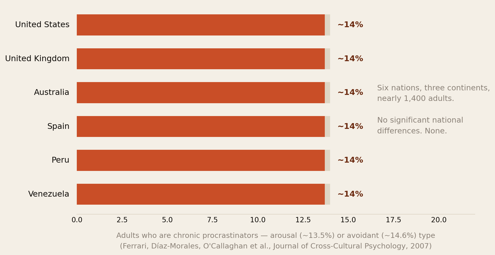
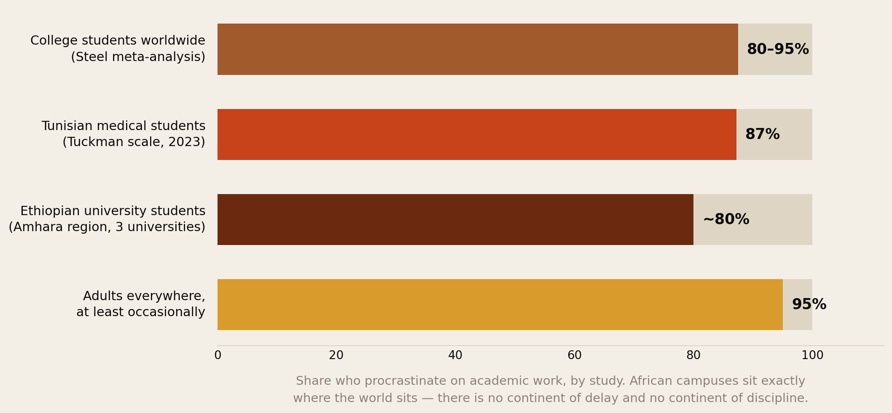
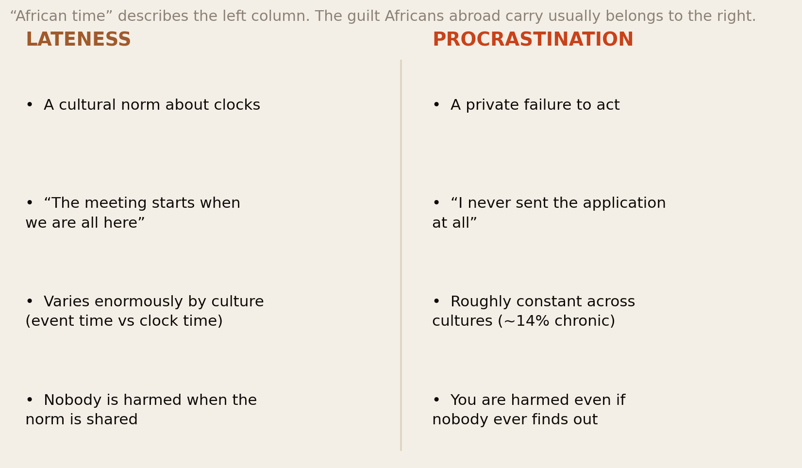
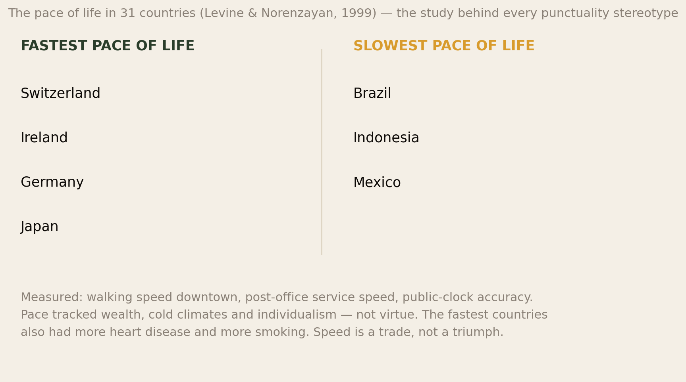
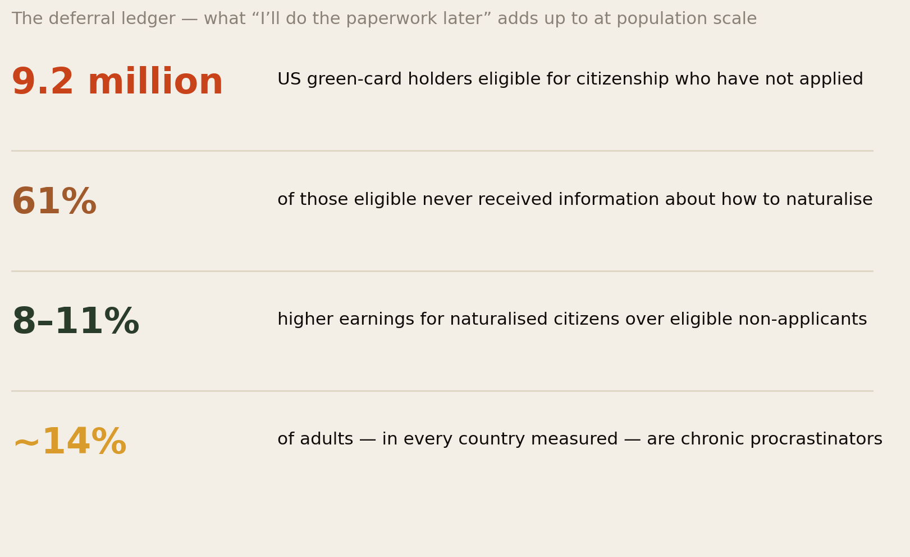
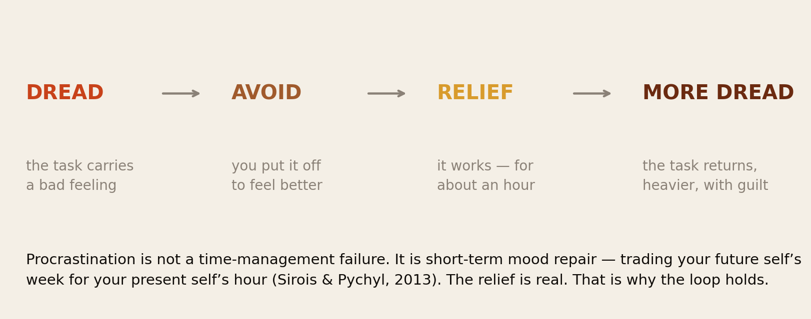
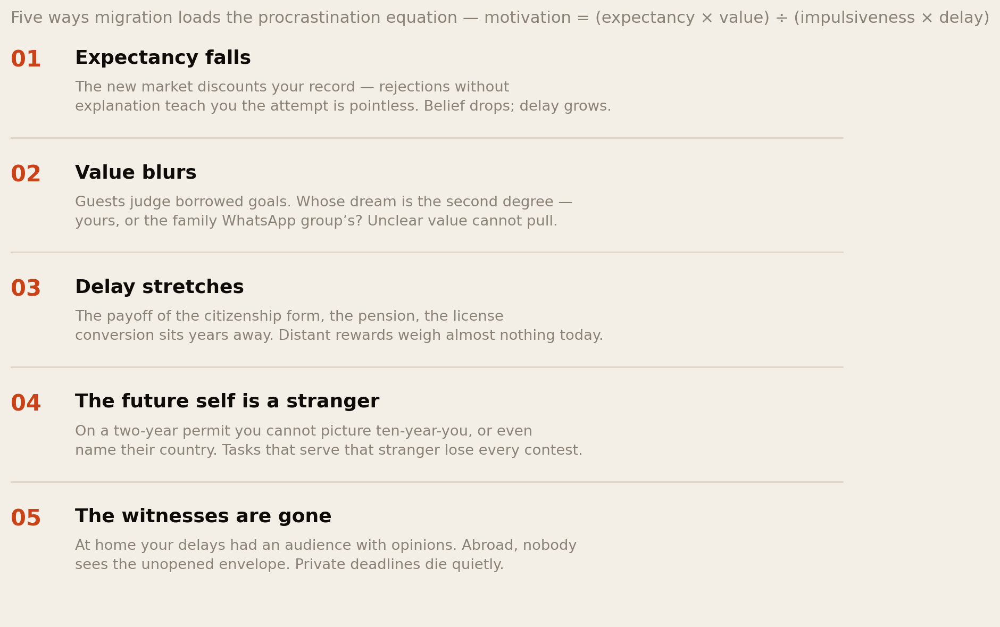
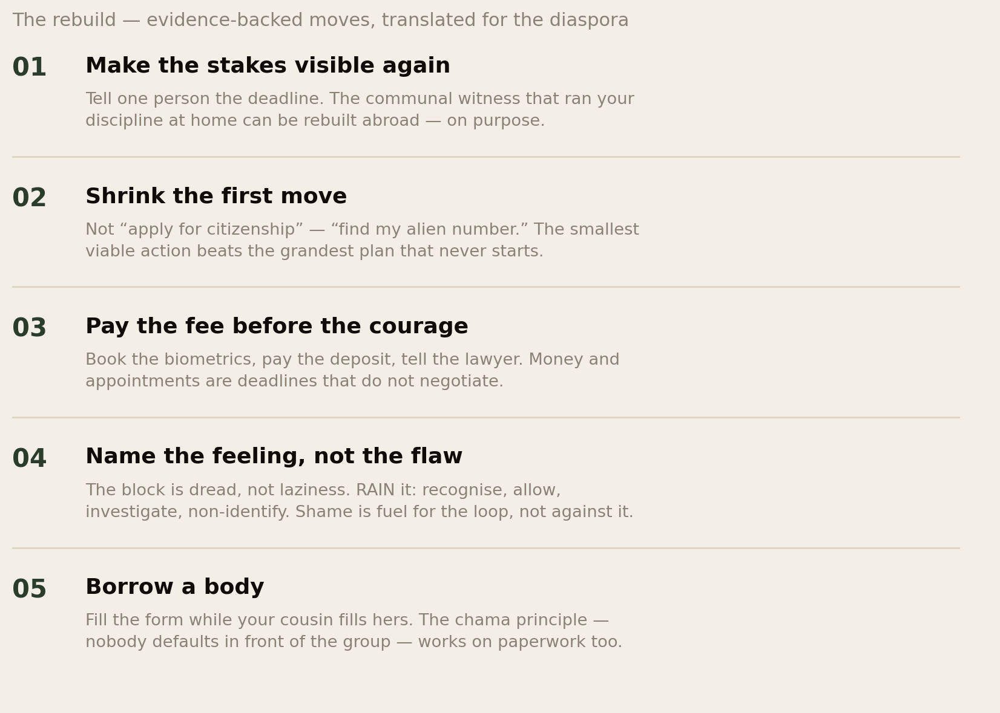

The Cost of Later.
Africans abroad carry a double accusation about time: the “African time” stereotype from outside, and a private guilt about the unsent application from inside. The data separates them cleanly. Lateness norms vary enormously by culture. Procrastination does not — chronic delay runs at roughly 14% in every country ever measured. This report is about the difference, what deferral actually costs the diaspora, and what half a century of research says gets the envelope opened.
Section 01The Short Version
There is a joke every African abroad has heard twice — once from a colleague, once from a relative. The colleague makes it about the wedding that started three hours late. The relative makes it about you: so you have been there five years and you still have not sorted your papers? Two different accusations, one word — time — and almost everything written for our community treats them as the same failing. They are not, and the confusion is expensive.
- Procrastination is culture-blind. In the one major study to measure chronic procrastination across nations — nearly 1,400 adults in the United States, United Kingdom, Australia, Spain, Peru and Venezuela — the rate was roughly 14% everywhere, with no significant national differences at all. African campuses tell the same story: about 80% of Ethiopian university students and 87% of Tunisian medical students report academic procrastination — exactly the 80–95% found among students worldwide.
- What varies is time culture, not self-control. Psychology distinguishes clock-time cultures, where the schedule rules the event, from event-time cultures, where the event rules the schedule. Lateness norms differ hugely across that line. Private delay of important tasks does not. “African time” describes a lateness norm; the guilt you carry abroad is usually about something else entirely.
- The real cost of later is not the party that starts at nine. It is the deferral ledger: 9.2 million US green-card holders eligible for citizenship who have not applied — while naturalised citizens out-earn eligible non-applicants by 8–11%. It is the licence never converted, the screening never booked, the pension form in the drawer. Delay abroad compounds like the fees in our black tax ledger — quietly, and against you.
- Procrastination is an emotional strategy, not a character flaw. The modern research consensus — formalised by Sirois and Pychyl in 2013 — is that procrastination is short-term mood repair: escaping the bad feeling a task carries by escaping the task. Migration loads tasks with heavier feelings — precarity, identity threat, shame with an audience back home — which is why capable people delay more abroad, not less.
- What works is structural, not motivational. Visible stakes, tiny first moves, paid deposits, named feelings, and borrowed witnesses. The communal accountability that ships African weddings on time — late start and all — is the same machinery the research prescribes for the unsent form.
Nobody on earth procrastinates more than anyone else on earth. But some of us pay more per day of delay — and the diaspora pays the highest rate of all.
Section 02The Double Accusation
Start with what it feels like, because the feeling is the data point everything else must explain. At home, you were the person who made things happen — the one who organised the harambee, hit the deadline, ran the side hustle before lectures. Abroad, there is a form on your table that would change your legal life, and it has been there since March. You are not lazy. You work more hours than anyone you know. And still the envelope sits.
Now add the outside voice. The “African time” joke follows you into rooms where you are the only African — a colleague’s smirk when you are two minutes behind, the assumption folded into every scheduling email. So you overcorrect: you become the first person at every meeting, the colleague whose punctuality is armour. And the private form still sits. The stereotype polices the clock you share with others while the real damage happens on the clock nobody sees.
This report’s first job is to take those two accusations apart. One is a claim about culture — that Africans hold looser norms about shared schedules. That claim has a real history and real content, and we treat it honestly in Sections 05 and 06. The other is a claim about character — that the delay on your table is a personal failing, perhaps even a cultural inheritance. That claim is measurably false, and the demolition takes one chart.
Section 03What Procrastination Actually Is
The standard research definition, from Piers Steel’s landmark 2007 meta-analysis: procrastination is voluntarily delaying an intended action despite expecting to be worse off for the delay. Three parts matter for us.
- The delay must be unnecessary. Putting off your CV to handle your mother’s hospital bill is not procrastination; it is prioritisation under load — and a great deal of what the diaspora calls laziness in itself is actually triage that would break most of the people doing the judging. Procrastination is only the delay you yourself cannot justify.
- It must be against your own judgment. The ancient Greeks called this akrasia — acting against your better knowledge. A person who has never heard of pension credits is not procrastinating on them. You, holding this report, reading this sentence, thinking about a specific form — you are.
- It is ancient and universal. The oldest known complaint about it is an Egyptian hieroglyphic from around 1400 BC — an African document, it is worth noting: “Friend, stop putting off work and allow us to go home in good time.” Roughly 95% of adults admit to procrastinating at least occasionally; 15–20% are chronic.
One more piece of history matters, because our community inherited it twice. The Greeks saw akrasia as a mistake — a failure of knowledge (Plato) or of habit (Aristotle) — but not a sin. It was St. Augustine, a North African wrestling with his own delays (“Lord, make me pure… but not yet”), whose theology turned failure-to-act into a moral failing, and the church built a thousand years of shame on that foundation. African Christianity inherited the shame frame from the missionaries; the diaspora then inherited the secular version from hustle culture. If you have ever heard laziness preached against as sin on Sunday and optimised against in a productivity podcast on Monday, you are carrying both inheritances at once — and the research verdict on both is the same: shame does not cure procrastination; shame fuels it. Our economics of shame report mapped that machinery; this one shows where it lands.
Section 04The Numbers Nobody Separates

In 2007, Joseph Ferrari and colleagues did the obvious experiment nobody had done: they measured chronic procrastination with the same instruments across six countries — rich and poor, northern and southern, clock-obsessed and famously relaxed. If procrastination were cultural, Spain and Venezuela should have differed from the United Kingdom. They did not. Roughly 13.5% of adults everywhere were chronic arousal procrastinators (the deadline-thrill type) and about 14.6% chronic avoidant procrastinators (the fear type) — men and women alike, in every country, with the researchers openly surprised by how flat the landscape was.

The African data lands in the same place. In Ethiopia’s Amhara region, a three-university study found nearly 80% of students procrastinate to some degree; a 2023 study of Tunisian medical students found 87.2% on the Tuckman scale; Sudanese and Nigerian campus studies report the same band. Compare Steel’s worldwide figure — 80–95% of college students — and the conclusion writes itself: African students procrastinate at precisely the world rate. Not more, as the stereotype implies. Not less, as the counter-myth of the iron-disciplined immigrant implies. The same.
Hold both findings together and the double accusation of Section 02 starts to dissolve. Whatever “African time” is, it is not showing up in the procrastination instruments. And whatever is stopping you sending the form, it did not come from your grandmother.
Section 05Time Is a Dialect

So what does vary? Time norms — enormously, measurably, and fascinatingly. Cross-cultural psychology draws the line between clock-time cultures, where events start because the clock says so, and event-time cultures, where events start when the participants and the moment are ready. Germany, Switzerland, Japan and the urban Anglosphere run hard clock-time. Much of Latin America, South Asia, the Middle East and Africa historically run event-time — a meeting begins when the people it exists for have assembled, and ends when it is finished rather than when it is scheduled to finish.

The classic measurement is Robert Levine and Ara Norenzayan’s 1999 pace-of-life study: walking speed downtown, postal-clerk service speed, and public-clock accuracy in 31 countries. The fastest places were Switzerland, Ireland, Germany and Japan; the slowest measured were Brazil, Indonesia and Mexico. Two findings matter more than the ranking. First, pace tracked economics and climate — colder, richer, more individualist places moved faster — which means speed is a feature of industrial wealth, not of character. Second, the fast places paid for it: higher rates of death from coronary heart disease and more smoking travelled with the speed. The clock is a technology with a price, not a moral standard.
Three honest complications, because this library does not launder its own side:
- “African time” is partly a colonial artefact. Scholars note the phrase itself was coined as a European judgment — rigid clock-time arrived with the coloniser’s railway, factory and mission school, imposed on societies that ran sophisticated seasonal, agricultural and ritual calendars. Pre-colonial African life was not timeless; it kept time by different instruments. The stereotype measures distance from Greenwich discipline and calls the distance a defect. Our sense of time report walks this history properly.
- Africa is not one time culture. In a 2020 study of lateness norms, South African respondents patterned with the Dutch as a clock-time culture — it was Pakistani respondents, from an event-time culture, who accepted longer delays. Lagos banking runs on a harder clock than rural Provence. The continent contains multitudes, and the stereotype contains none of them.
- Event-time is a value system, not an absence of one. The Swahili proverb says it directly: haraka haraka haina baraka — hurry, hurry has no blessing. In event-time logic, ending a conversation with your elder because a clock instructed you to is the rude act, not the late arrival. What event-time optimises — presence, relationships, completion — are precisely the goods clock-time cultures now pay mindfulness apps to retrieve.
A culture’s clock is a dialect. Like the confidence dialects in our confidence report, it says nothing about capability — but migration means being graded, permanently, in a dialect you did not grow up speaking.
Section 06How Cultures Delay Abroad
The user question this report exists to answer: do different cultures procrastinate differently once they are living abroad? The honest answer has three layers.
Layer one: the core rate does not move. Ferrari’s six-nation result — and the student data from Africa, Europe, Asia and the Americas — says the underlying machinery of private delay is human, not cultural. Put a German, a Nigerian, a Brazilian and a Korean in the same visa queue and roughly one in seven of each is a chronic procrastinator. Whatever you inherited from your culture, it was not the tendency itself.
Layer two: what differs is which delays are visible, and which are forgiven. This is where cultures genuinely separate abroad, and it is worth naming plainly:
- Clock-time arrivals (German, Japanese, Swiss backgrounds) get charged for the wrong thing too — their cultures grade lateness so harshly that private procrastination hides in plain sight behind immaculate punctuality. The man who has never missed a meeting has not seen a doctor in six years. His delay is invisible because his culture polices the shared clock, not the private one.
- Event-time arrivals (many African, Latin American, South Asian, Arab backgrounds) get charged twice. Their shared-clock norms read as unprofessionalism in clock-time job markets — a real tax, documented in every cross-cultural business guide — and then the stereotype gets extended, falsely, to their private reliability. The Nigerian engineer who is twenty minutes late to the barbecue is assumed to be late on the project. The data says the two have nothing to do with each other.
- East Asian arrivals carry the mirror burden — a punctuality reputation so strong that their genuine procrastination (student studies in China, Japan and Korea find the usual 80–95%) is disbelieved, which researchers note makes it harder to seek help for.
- And the Anglo-American host culture procrastinates identically while running the world’s largest anti-procrastination industry — the same culture that produced Peale’s positive thinking produced the productivity-guilt complex, and exports both. The people judging your time dialect are, at ~14% chronic rates, delaying their own tax filings as they judge.
Layer three: migration itself raises everyone’s delay on high-stakes tasks — and this is the layer that actually matters for your life. Not because any culture procrastinates more, but because migration systematically loads the specific tasks that matter most — immigration paperwork, credential recognition, health screening in an unfamiliar system, retirement planning in a country you may not stay in — with exactly the emotional weight that the science says produces avoidance. Section 09 does the mechanics. But first, the bill.
Section 07The Deferral Ledger

In the United States alone, 9.2 million lawful permanent residents are eligible for citizenship and have not applied — many eligible for years. The consequences are not abstract: naturalised citizens have higher employment rates and earn 8–11% more than eligible permanent residents who never apply, hold voting rights, security from deportation, and the passport that ends the visa treadmill. Every year of delay is a year of that gap, compounding the way we showed money compounds in the black tax ledger.
Now, the honest caveat this library owes you — and it is a big one. The naturalisation gap is not mostly procrastination. The application fee runs to hundreds of dollars per person; 61% of eligible immigrants say they never received information about how to naturalise; the English and civics tests frighten people with every reason to fear official examinations. Those are structural barriers, and calling a fee a character flaw is exactly the trick this report exists to refuse. But sit with the remainder. Inside those 9.2 million are enormous numbers of people — you may be one — who can afford the fee, speak the language, would pass the test in their sleep, and have simply not done it. Ask around any African gathering abroad: the five-year “I need to sort my papers” is a genre of its own. Structure explains the population; it does not always explain you.
The ledger runs far past citizenship, and every line will be familiar:
- Health, deferred. Procrastination is not just a productivity problem: trait procrastination is associated with higher rates of hypertension and cardiovascular disease even after controlling for age, education and personality — partly through stress, partly through exactly the delayed check-ups and screenings that a confusing foreign health system makes easiest to defer. The immigrant who has not registered with a GP four years after arriving is a diaspora cliché with a cardiology bill attached.
- Credentials, unconverted. The nurse working as a care assistant “until I do my conversion exams”, year six. The engineer whose licence paperwork sits in a folder named FINAL. Our CV research showed the market discounts your record unfairly — which makes the conversion you control doubly precious, and its deferral doubly expensive.
- Money, unplanned. The pension forms unfilled because “I’m not staying here forever” — a sentence the diaspora has been saying, on average, for a decade at a time (we measured what it leaves behind). The tax filing done in a panicked April night, forfeiting reliefs a January filer would have caught. The plot at home bought quickly — then the title deed left unregistered for years.
- The relationships and the returns. The call home not made until the news is too big to deliver. The visit deferred until it becomes a funeral. Ask anyone who has buried a parent from abroad what “later” cost them, and the ledger stops being financial.
The stereotype worries about the party that starts late. The ledger shows the real losses happen in perfect silence, on time-stamped forms, with no music playing at all.
Section 08The Emotional Engine

Why does a capable adult leave a life-changing form unopened for a year? For most of a century the answers were moral (weak character), then managerial (poor time management), then motivational (not wanting it enough). All three failed, because all three miss what the delay is for. The modern consensus, formalised by Fuschia Sirois and Timothy Pychyl in 2013, is that procrastination is emotion regulation: a short-term mood repair strategy. The task carries a bad feeling. Avoiding the task removes the feeling — instantly, reliably, every single time. Procrastination is not a failure of your discipline; it is a success of your relief-seeking, billed to your future self.
This is why the diaspora’s hardest tasks are the most avoided, in a precise hierarchy. Nobody procrastinates on eating jollof. People procrastinate on tasks that are boring, frustrating, ambiguous — or threatening. And migration is a machine for loading threat onto paperwork:
- The immigration form is not a form. It is a document that can say no to your entire life. Opening it means feeling the full weight of your precarity for two hours; leaving it closed means not feeling it tonight. As mood repair, avoidance is working perfectly.
- The credential exam is not an exam. It is a referendum on whether the country was right to shrink you — failing it would confirm the discount our CV report measured, so the psyche protects itself by never sitting it. Unattempted is undefeated.
- The unfinished business plan is not unfinished. It is unfalsifiable. As long as the return-home venture stays a plan, you are a future founder; the day you launch, you become someone who might fail with witnesses back home watching. Excuses are shame insurance, and procrastination manufactures them wholesale.
And then the loop closes with the cruellest gear: the guilt. Avoidance brings relief, relief breeds guilt, guilt makes the task feel worse, and a worse-feeling task is avoided harder. The Augustine inheritance — delay as sin — pours fuel on precisely this fire. The research finding that undoes it is almost embarrassing in its gentleness: students who forgave themselves for procrastinating on one exam procrastinated less on the next; self-compassion, not self-flagellation, is what breaks the loop. Your grandmother’s theology had a word for this too, and it was not sloth. It was grace.
Section 09What Migration Does to the Equation

If Section 08 is the fuel, this is the engine diagram. Piers Steel and Cornelius König’s Temporal Motivation Theory compresses the research into one expression: motivation = (expectancy × value) ÷ (impulsiveness × delay). You act when you believe the attempt will work (expectancy), care about the payoff (value), can resist nearer pleasures (impulsiveness), and the reward is close (delay). Weaken the numerator or inflate the denominator and delay follows as mechanically as arithmetic. Now watch what migration does to every term:
- Expectancy falls. The silent rejections, the discounted credentials, the name that halves the callbacks — every unexplained no is a lesson that trying does not work here. Our confidence report showed migration voids the evidence base of a confident person; TMT shows the same collapse, from the motivation side. Low expectancy is not laziness. It is learned arithmetic.
- Value blurs. Half the diaspora’s big tasks are borrowed: the second degree the family expects, the professional exam that impresses Kampala, the house at home built for an audience. Bandura’s research on purpose is blunt — motivation sustained by other people’s goals leaks. The task you keep deferring may be one you never chose.
- Delay stretches. Citizenship pays off in year six. The pension pays at sixty-seven. The converted licence pays after two exams and a placement. Temporal discounting means distant rewards weigh almost nothing against tonight’s relief — and migration’s biggest rewards are all distant.
- The future self becomes a stranger. The research on present bias shows people treat their future self like a different person — and the provisional life makes it literal. On a renewable permit, ten-year-you has no fixed country, no certain career, no address. Hershfield’s finding that people save more after seeing their aged face has a diaspora corollary: it is very hard to do paperwork for a stranger whose city you cannot name. The “I’m not staying forever” sentence is not a plan; it is a solvent that dissolves every long-horizon task it touches.
- And the witnesses vanish. This term is ours, carried over from the confidence and shame research: at home, your commitments had an audience with opinions, and the audience was machinery. Abroad, nobody sees the unopened envelope, so the deadline dies in private. The same communal gaze that overtaxes failure also — and this matters for Section 11 — powered completion.
The confident hustler who becomes a hesitant deferrer abroad has not changed character. Every variable in their motivation equation was rewritten by the border. Variables can be rewritten back.
Section 10The Six Types, Diaspora Edition
Psychologist Linda Sapadin’s six styles of procrastinator map onto diaspora life with uncomfortable precision. Most people are a blend; find yours, because the fixes differ.
- The Perfectionist cannot submit the application until it is unrejectable — because for us, rejection was never neutral: “twice as good” was survival advice. Fix: ship at good-enough; the market rewards submitted over immaculate.
- The Dreamer lives in the someday-return, the someday-business, the someday-house — vivid enough to feel like progress. Fix: one small falsifiable step; a dream with a deadline becomes a project.
- The Worrier avoids the form because the form can say no. Fix: name the fear precisely and price the alternative — the no you fear is survivable; the decade of limbo is not.
- The Crisis-Maker believes they work best at the last minute — and abroad, some deadlines (visa windows, filing dates) have no mercy for the late surge. Fix: artificial earlier deadlines with real stakes attached.
- The Defier delays as quiet rebellion — against the boss, the system, sometimes the family whose expectations wrote the to-do list. Fix: re-choose the task as yours, or honestly drop it; resentment is not a schedule.
- The Overdoer — the diaspora’s signature type — is not avoiding work but drowning in it: two jobs, remittances, everyone’s emergencies, and so their own file sits eternally last in the queue. Fix: the black-tax boundaries our ledger report laid out. You cannot to-do-list your way out of being everyone’s infrastructure.
Section 11What Actually Works

The research is unanimous on what does not work: willpower, self-shaming, waiting for motivation, and elaborate plans. What works attacks the equation directly:
- Shrink the first move until it is too small to dread. Not “apply for citizenship” — “find my alien number.” Not “convert my licence” — “email one person who did it.” The minimum viable action removes the emotional payload that powers avoidance, and started tasks generate their own momentum.
- Design the environment, not the mood. The form on the kitchen table gets filled; the form in the drawer does not. Phone in the other room, documents pre-gathered in one folder, the fee already budgeted. Every removed step is a removed exit.
- Buy deadlines with money and appointments. Book the biometrics slot before you feel ready. Pay the exam fee first. Tell the lawyer to expect it Friday. External deadlines are the one intervention that works on every procrastinator type, and paid ones do not negotiate.
- Treat the feeling, not the flaw. When the avoidance urge hits, run RAIN — recognise the dread, allow it, investigate what exactly feels threatening, and non-identify: you are experiencing fear, you are not the fear. Then forgive the years already lost; the self-forgiveness data says that is not softness, it is maintenance on the machine.
- Make it communal again. The single most African intervention is the one the research ranks highest: witnesses. Fill the forms in company. Tell one person the deadline and ask them to ask. The chama principle — nobody defaults in front of the group — is why savings circles outperform solo saving, and it works identically on paperwork. Body-doubling, the productivity industry calls it now, selling back to us at $30 a month what the harambee committee always knew.
Section 12The African Advantage
Here is the reframe the productivity industry will never sell you: the cultures labelled worst at time are sitting on the best anti-procrastination technology ever built. Consider what actually happens in African communal life. The wedding may start two hours after the card says — and the wedding happens, planned by a committee of forty, financed by contribution lists that close on time, executed by aunties whose logistics would shame a consultancy. The harambee hits its target. The chama pays out on schedule, every cycle, for decades. The burial society moves a body across continents in days. The market stall opens every single dawn.
None of that runs on individual willpower. It runs on visible stakes and present witnesses — exactly the two variables Section 09 showed migration deletes, and exactly the two the research says matter most. Event-time cultures are not weak at completion; they are weak at solitary, invisible, clock-audited completion, because they never needed it. The tasks that defeat the diaspora — forms filled alone at midnight, exams booked by no one, plans witnessed by nobody — are tasks stripped of every mechanism our cultures built. The fix is not to become German. The fix is to re-communalise your paperwork: put the citizenship application on the group’s agenda the way the wedding was, and watch the same machinery ship it.
Your culture never failed at deadlines. It failed to anticipate a life where deadlines would arrive without people attached.
Section 13The Uncomfortable Part
Three things this report cannot leave unsaid, because the comfortable version of the argument would be a lie.
First: “it’s just our culture” is sometimes a launderette. Event-time is a real and defensible value system — between consenting participants who share it. The diaspora event that starts three hours late in a city where guests booked babysitters and last trains is not event-time; it is a co-ordination failure wearing culture as a costume, and everyone in the room knows the difference. Respecting our own people’s time — the scarcest thing working immigrants own — is not colonial assimilation. Within the community, the “African time” joke is only funny until you price the hours; a community that guards each other’s Saturdays is richer than one that jokes about wasting them.
Second: the structural excuse and the personal excuse take in each other’s washing. Yes — fees, hostile bureaucracies and missing information explain much of the deferral ledger, and blaming individuals for structural barriers is the oldest trick in the anti-immigrant book. But the reverse trick is ours: citing the structure while the barrier in your specific case is an envelope and an evening. The honest audit takes ten minutes: for each deferred task, write what is actually blocking it. Where the answer is money or law, organise. Where the answer is dread, Section 11 is waiting. Both lists deserve respect; only one of them should be getting your excuses.
Third: do not swap the shame of delay for the shame of rest. The same industry that pathologised “African time” also pathologised the nap. If you overcorrect into the Anglo productivity cult — every hour optimised, every rest earned, worth measured in output — you will have imported the anxiety with none of the pension. The research is clear that chronic overwork feeds the very avoidance loops it claims to cure, and the fastest countries in Levine’s study bought their pace with their hearts. The goal of this report is not that you become a person who never delays. It is that your delays become chosen — the deliberate, present, unhurried time your culture perfected — while the envelope that decides your future gets opened this week, with a cousin on the phone and the fee already paid.
Section 14Method & Limits
This report combines cross-cultural psychology, procrastination research and migration data, as at 27 August 2026.
- Procrastination is measured by self-report scales (Tuckman, Lay, General Procrastination Scale and kin), and prevalence figures move with the scale and sample used. The 95% / 80–95% / 15–20% figures are the standard bands from Steel’s 2007 meta-analysis; the ~14% cross-national figure is Ferrari and colleagues’ 2007 six-nation study. Those six nations did not include an African country — the African evidence we cite is from separate campus studies (Ethiopia, Tunisia, Sudan, Nigeria) using comparable instruments, which is convergent but not identical methodology.
- The lateness/procrastination distinction is analytically clean but empirically entangled: both are self-reported, and a culture’s norms shape what respondents count as “delay” at all — the same entanglement we flagged for confidence dialects. We rest the argument on the cross-national flatness of chronic rates, which survives this caveat better than any single percentage.
- The Levine pace-of-life data is from 1999 and measured cities, not nations; smartphones have since rewritten everyone’s relationship with waiting. We use it for its correlational structure (pace tracks wealth and climate), which later work supports, not for current rankings.
- The naturalisation numbers are structural first. The 9.2 million figure and the 61% information gap are documented by the Niskanen Center, the New Americans Campaign and related research; the 8–11% earnings differential is associational and partly reflects selection. We explicitly do not claim the gap is procrastination; we claim deferral has measurable costs and that some unknown fraction of it is voluntary delay. No study, to our knowledge, has measured procrastination specifically in African diaspora populations — that absence is itself a finding, and Sections 07–09’s diaspora application is our synthesis, labelled as argument.
- The health association (procrastination with hypertension and cardiovascular disease, in Sirois’s work) is cross-sectional; causality plausibly runs through stress and delayed care but is not proven by that design.
- Sections 06, 09 and 12 are interpretive. The four-culture comparison of how delay is judged abroad, the TMT-with-witnesses migration analysis, and the “African advantage” reframe are our syntheses of established mechanisms applied to diaspora life, not measured studies.
- The psychological framework reached us partly through a secondary source — Mark Manson’s Procrastination Guide, shared by a member of this network. We went to the primary literature it points to — Steel (2007), Sirois & Pychyl (2013), Ferrari et al. (2007), Sapadin (1996), Levine & Norenzayan (1999) — and cite those; the guide is credited as the pointer, not as evidence.
- Nothing here is clinical advice. Chronic, distressing procrastination travels with ADHD, anxiety and depression often enough that a stuck year deserves a professional conversation, not another productivity system.
Principal sources: Steel (2007), The Nature of Procrastination, Psychological Bulletin; Ferrari, Díaz-Morales, O’Callaghan, Díaz & Argumedo (2007), Journal of Cross-Cultural Psychology; Sirois & Pychyl (2013) on mood repair; Sirois (2015) on procrastination and hypertension/CVD; Levine & Norenzayan (1999), The Pace of Life in 31 Countries; van Eerde & Azar (2020) on lateness norms; Ethiopian (Amhara), Tunisian and Sudanese campus procrastination studies; Niskanen Center and New Americans Campaign on naturalisation barriers; Sapadin (1996), It’s About Time!; Steel & König’s Temporal Motivation Theory; scholarship on “African time” and colonial clock discipline in African Studies. Located partly via Mark Manson’s Procrastination Guide.
Companion reports: The Sense of Time, The Most Optimistic People on Earth, The Black Tax Ledger and What Will People Say?
The diaspora helps the diaspora.
Africa Global Forum is a peer network for Africans abroad — help each other, sit together, and bounce ideas. This research is part of an open library, free to read and share.